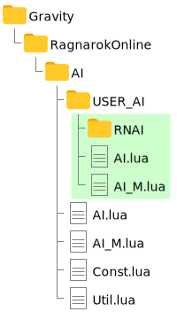

RNAI 簡介
RO 仙境傳說傭兵與生命體的自訂 AI 腳本
- 可設定自動使用技能
- 可設定尋找攻擊目標的方式
- 預設是防止搶怪（可自行修改）
- 預設有主動模式、被動模式提供切換
- 跟隨主人的方式不會亂飄，所以趕路時比較不會跟不上
- 相較於官方 AI 較不會跑出螢幕範圍
[注意] 1.0.2 版(含)以前，自動技能設定不適用「對地使用技能，如地雷陷阱」以及「以自己為中心傷害技能，如怒暴」。
更新紀錄
- RNAI-1.1.0 (2022.02.11)
- [新增] 不同生命體/傭兵可以使用獨立的設定檔
- [修正] 自動技能設定可以設定對地面以及以自身為中心的傷害技能了
- [變更] 當命令生命體/傭兵攻擊目標時，不再單純使用普通攻擊，而是會套用技能設定
- RNAI-1.0.2 (2021.02.19)
- [修正] 當設定
SearchSetting=SearchMode[2]時，之前第一次切換要切換 2 次才會變成SearchMode[1]。修正後只要一次就能切換過去。
- [修正] 當設定
- RNAI-1.0.1 (2021.02.19)
- [修正] 開啟 TraceAI 時，手動使用傭兵攻擊魔物會跳窗
- [優化] 以前為了防止斷線，剛過點或是用蒼蠅翅膀會短暫延遲才會啟動。現在取消這個延遲也可以不斷線了。
- RNAI-1.0.0 (2017.02.15)
- 最初版本，即巴哈姆特的 RNAI_E1_2.zip
安裝下載
- 下載檔案：
- RNAI-1.1.0 最新版
- RNAI-1.0.2 穩定的舊版
- 將檔案解壓縮到
RO資料夾\AI\USER_AI\，若沒有 URER_AI 資料夾可以自行建立。
（參考下圖，綠底為下載解壓縮的檔案）
 - 在遊戲中輸入
/hoai（生命體）或/merai（傭兵），可以切換使用官方或是使用者自訂的 AI。 - 重新召喚、過地圖、瞬間移動（含翅膀）或重登即生效。
操作說明
基本的操作都跟預設AI相同，在此不多贅述。以下只列出比較特別的部分：
【常用操作】
移動
指定傭兵（生命體）到某個位置待命，到達後不採取任何動作，直到給予其他指令。
- 生命體：ALT + 左鍵（點地面）
- 生命體：ALT + 右鍵（點地面）
攻擊
命令傭兵（生命體）攻擊特定目標，過程中會依照設定自動使用技能。
- 生命體：ALT + 左鍵（點目標）
- 生命體：ALT + 右鍵（點目標）
重設
回到初始狀態，並依照腳本自動做出反應。
（例如「移動」後想回到一般狀態可使用這個指令）
- 傭兵：CTRL + T
- 生命體：ALT + T
模式切換
可以切換不同的模式（主動/被動）
- 傭兵：CTRL + T + T
- 生命體：ALT + T + T
（相當於兩次跟隨指令，需在0.5秒內）
【好友系統】
加好友
把特定玩家當成好友，允許攻擊對方的怪物。
（此清單在重新召喚、過傳點、瞬間移動都會重置清空）
- 傭兵：ALT + SHIFT + 左鍵點目標
- 生命體：ALT + SHIFT + 右鍵點目標
（如果是要加的對象是生命體那種無法點擊的對象，點他所在的格子也可。）
取消好友
清空所有好友清單
- 傭兵：ALT + SHIFT + 左鍵點自己
- 生命體：ALT + SHIFT + 右鍵點自己
範圍加好友
指定一個矩形範圍，將當時在範圍內的所有玩家、生命體、傭兵都當作是好友。 例如組隊時，可以將一群人加好友，讓傭兵可以打他們的怪物。
- 傭兵：用移動指令點擊左上角座標，再用 ALT + SHIFT + 點擊右下角座標
- 生命體：用移動指令點擊左上角座標，再用 ALT + SHIFT + 點擊右下角座標
自訂腳本
原本修改腳本是直接修改程式碼，但為了使用者方便，RNAI 把一些常用的設定參數獨立獨立出來。
只要用文字編輯器修改相關設定檔即可。
不建議用微軟記事本編輯，對文字編輯器不熟悉的使用者可以到「RNAI純文字編輯器」編輯。
預設設定檔
只要找不到個別設定檔，就會讀取預設設定檔
| 類型 | 設定檔 |
|---|---|
| 傭兵 | MerCfg.lua |
| 生命體 | HomCfg.lua |
個別設定檔
有個別設定檔時，會優先讀取個別設定檔。
| 類型 | 設定檔 | 備註 |
|---|---|---|
| 弓傭兵 | arcxx.lua |
|
| 槍傭兵 | lanxx.lua |
|
| 劍傭兵 | swdxx.lua |
|
| 商城傭兵 | wander_man.lua => 邪骸浪人 wicked_nymph.lua => 妖仙女 kasa_tiger.lua => 火鳥/虎王(共用) salamander.lua => 火蜥蜴 teddy_bear.lua => 玩偶熊 mimic.lua => 邪惡箱 disguise.lua => 假面鬼 alice.lua => 愛麗絲女僕 |
1.1.0版開始才支援 |
| 生命體 | lif.lua 麗芙 amistr.lua 艾咪斯可魯 filir.lua 飛里樂 vanilmirth.lua 巴尼米樂斯 eira.lua 艾蘿 bayeri.lua 巴耶黎 sera.lua 賽拉 dieter.lua 迪爾特 eleanor.lua 伊琳諾雅 |
1.1.0版開始才支援 |
- 上面的
xx是傭兵等級(01~10)，例如「1 等弓傭兵」的個別設定檔為arc01.lua - 1.1.0版(含)之後，個別設定檔請放在 RNAI\custom 資料夾內；1.0.2 版(含)以前，個別設定檔請放在 RNAI 資料夾。
參數說明
FollowDis=2 --跟隨距離
MoveDelay=500 --兩次發送移動的延遲 500 ms，建議不要動他。
RadiusAggr=12 --搜尋怪物的半徑
SearchMode={{64,128,0,256,0,0,-1,-1},{50,200,-800,25,30,-45,-1,1}} --主被動的相關參數，細節後述
SearchSetting=SearchMode[1] --剛招喚生命體(傭兵)時載入被動模式；如果想要先載入主動模式可以將 1 改成 2
WeakTargets={} --這是不使用技能的魔物ID清單，魔物ID可以查詢RO幻想廳等網站(這個設定只對生命體有效)
Skill={} --這個不要動他
Skill[#Skill+1]={} --新增一組技能
Skill[#Skill].id=0 --技能ID(0=普攻)
Skill[#Skill].lv=1 --技能等級
Skill[#Skill].target=0 --技能對象(0=魔物；1=玩家；2=生命體或傭兵)
Skill[#Skill].when=1 --技能使用時機(0=不限制；1=有怪物時；2=沒怪物時)
Skill[#Skill].times=1 --技能連續使用次數(每次 delay 過後會回滿)
Skill[#Skill].delay=0 --連續使用後的延遲
Skill[#Skill].sp={0,100} --SP百分比限制
Skill[#Skill].nMyEnemy=0 --生命體(傭兵)被幾隻怪物以上攻擊才使用
Skill[#Skill].nOwnerEnemy=0 --主人被幾隻怪物以上攻擊才使用
Skill[#Skill].nRangeEnemy=0 --主動範圍內出現幾隻怪物以上攻擊才使用
Skill[#Skill].chase=1 --距離魔物太超出技能範圍時是否靠近魔物
Skill[#Skill].stemp=0 --不動他
Skill[#Skill].count=0 --不動他技能 ID 的查詢
RNAI純文字編輯器 頁面可查詢技能ID。
多組技能設定
上面說明中，從 Skill[#Skill+1]={} 到 Skill[#Skill].count=0 為一組技能設定。
設定多組技能時，會依序由上至下搜尋目前可以使用的技能，找到的話就會使用這個技能並中斷搜尋。